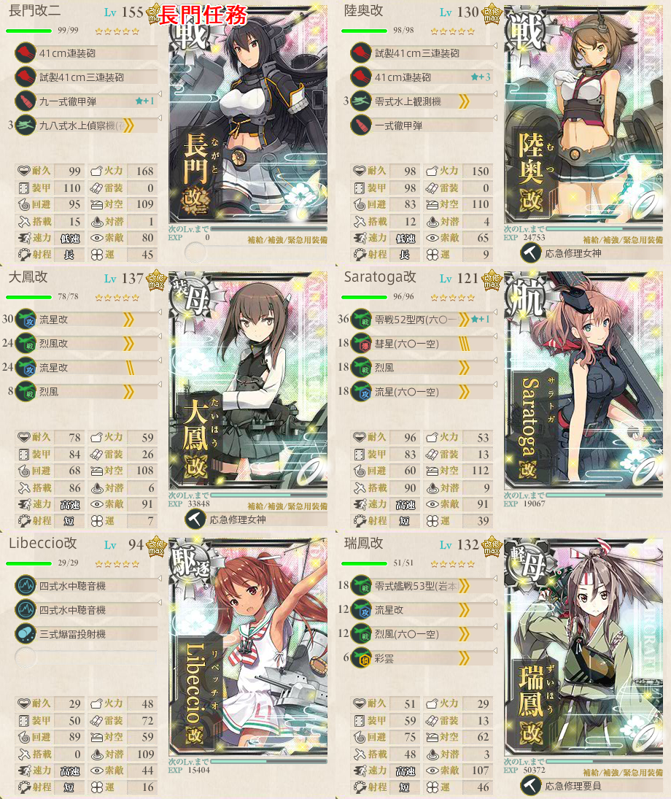
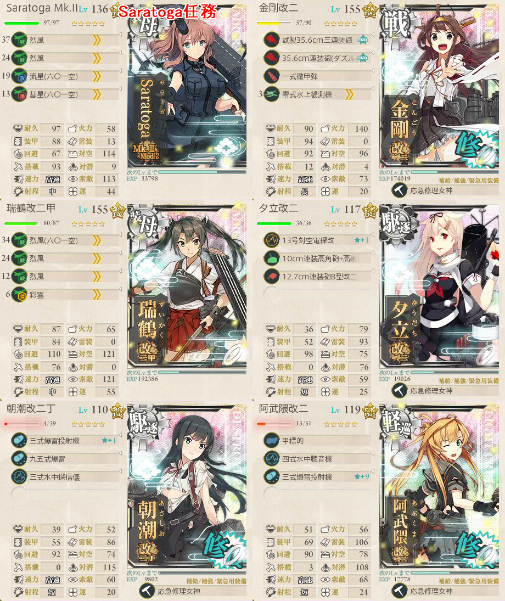

【艦これ】5-5 サーモン海域北方【マンスリー】
5-5 サーモン海域北方 攻略メモ
構成
- 3通りのルートがあるようだ
- ドラム缶の数によって開始からBに行けるようだが、ボス攻略用ではない
北ルートACEN
- ２戦目では夜戦で潜水艦を相手にすることになる
- EからNに行くには雷巡を1以下に抑える
- 8割程度でNに行けるようだが、反れることもある
中央ルートADEN
- 正規空母2軽空母1または高速統一でこちらに入る
- 2戦目が比較的素直でやりやすいと思われる
南ルートAFGN
- 潜水艦ジャスト３隻でこのルート固定
- ２戦目が対潜艦隊のため、速攻で潰す必要あり
荒潮改二任務
駆逐2必須（荒潮改二旗艦＋朝潮or大潮or満潮から１隻）
対空の優秀な荒潮に対空カットイン装備を
＋１隻の駆逐はパラメータを考慮すれば朝潮改二丁一択
- 運良くボス戦で無傷で先制対潜攻撃できればかなり優位に立てるはず
制空権や火力の関係上、中央Dルート推奨
全艦キラ付け＋拡張スロットダメコン装備 道中ボスフル支援が求められる
- イベント海域並の消耗を強いられる
長門改二任務
- 長門改二旗艦、陸奥が２番目に必須
- 空母２、軽空母１でルート固定を狙う
- 残り１枠はS勝利のため、先制対潜艦

Saratoga Mk.II任務
- 恐ろしいことにボスS勝利が要求される
- Saratoga MK.II または Mod.2旗艦
- 軽巡1 駆逐2 自由枠2
- 支援、キラ付けは必須

高速統一でADENルート
ボス優勢ラインは356（最終形態時は377）
空母はジェットに拘らず、カットイン装備が良い
瑞鶴は棒立ち役なので最後尾に移動したほうが良さそう（誤差ではある）
ボスに潜水艦が必ず混ざるため、S勝利を意識して先制爆雷を2隻用意
- 単縦陣でゴリゴリ削るために朝潮改二丁（またはLibeccio）はほぼ必須
- 軽巡には先制雷撃で敵の数を減らせる阿武隈を採用し、道中の安定を図る
これだけやってもお祈りゲー
- 艦戦の改修が進んでいれば瑞鶴を攻撃に参加させられるかも？
ボスで反航戦を引くと旗艦やレ級がほとんど削れずつらい
- 道中、E風、反航と、お祈りポイントが多く難易度の高い任務
敵編成
| マス | 編成 | 備考 |
|---|---|---|
| A | レ級 軽空母1～2 重巡0～1 軽巡1 駆逐1～2 潜水0～1 | 必ずレ級がいる 確保ライン420 |
| C | 潜水艦5～6 たまに軽空母1 | 夜戦 |
| D | ヲ級orヲ改 軽空母2～3 フラタ1 軽巡0～1 駆逐1 | 優勢ライン257 |
| E | エリレ 重巡1～2 雷巡0～1 軽巡1 駆逐2 | 必ずエリレがいる 確保ライン321 |
| F | 軽空母0～1 軽巡＋駆逐 | 対潜艦隊 |
| G | Eと同様 | 必ずエリレがいる |
| N | ヲ改 ヲ級 エリレ 駆逐2 エリヨ | 前哨戦 優勢ライン356 |
| ヲ改2 戦姫 駆逐2 フラヨ | 最終 優勢ライン377 | |
出撃ログ
2018年3月
| 回数 | 編成 | 制空 | ルート | 戦果 |
|---|---|---|---|---|
| 1 | Saratoga 翔鶴 瑞鶴 朝潮 夕立 名取 | 430-449 | ADE | 翔鶴大破 |
| 2 | Saratoga 翔鶴 瑞鶴 朝潮 夕立 名取 | 430-448 | ADEN | A勝利（比叡） |
| 3 | Saratoga 金剛 翔鶴 瑞鶴 朝潮 阿武隈 | 430-450 | ADEL | E風 |
| 4 | Saratoga 金剛 翔鶴 瑞鶴 朝潮 阿武隈 | 430-450 | AD | 朝潮大破 |
| 5 | Saratoga 金剛 翔鶴 瑞鶴 朝潮 阿武隈 | 430-450 | ADEN | S勝利（龍驤） |
| 6 | Saratoga 金剛 瑞鶴 夕立 朝潮 阿武隈 | 381-389 | ADEN | S勝利（伊19） |
2017年5月
| 回数 | 編成 | 制空 | ルート | 戦果 |
|---|---|---|---|---|
| 1 | 長門 陸奥 大鳳 Saratoga 嵐 瑞鳳 | 422～437 | ADEN | A勝利 |
| 2 | 長門 陸奥 大鳳 Saratoga Libeccio 瑞鳳 | 422～437 | ADEN | E瑞鳳大破 ダメコン進撃 消費なし S勝利 |
2017年1月
| 回数 | 編成 | 制空 | ルート | 戦果 |
|---|---|---|---|---|
| 1 | 荒潮 陸奥 朝潮 赤城 大鳳 龍驤 | 442～459 | ADEN | C敗北 |
| 2 | 荒潮 陸奥 朝潮 赤城 大鳳 龍驤 | 442～453 | ADEN | C敗北 |
| 3 | 荒潮 陸奥 朝潮 赤城 大鳳 龍驤 | 442～455 | ADEN | E大鳳大破 ダメコン進撃 消費 S勝利（龍驤） |
| 4 | 荒潮 陸奥 朝潮 赤城 大鳳 龍驤 | 442～455 | ADEL | E風 |
| 5 | 荒潮 陸奥 朝潮 赤城 大鳳 龍驤 | 442～455 | ADEN | A勝利（妙高） |